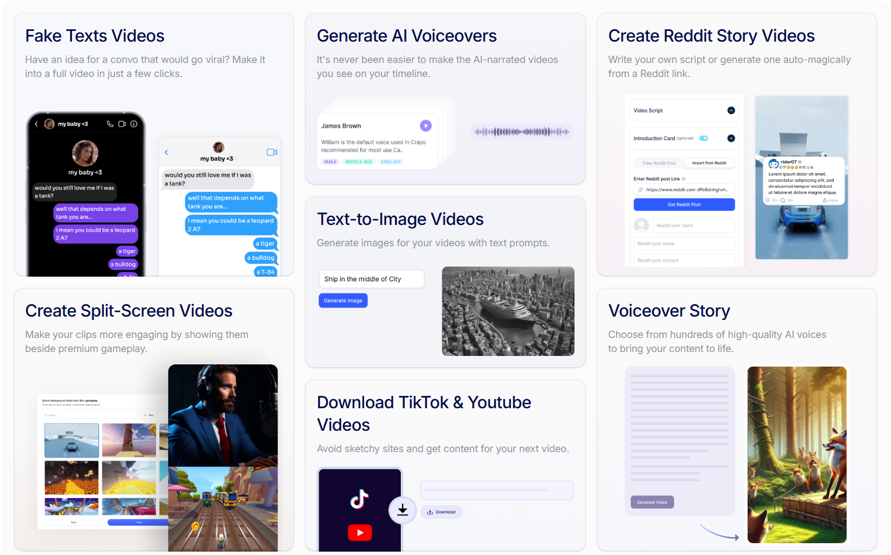

The Evolution of Video Creation and the Rise of AI
In today's digital landscape, video content reigns supreme. However, creating high-quality, engaging videos can be time-consuming and resource-intensive. This is where AI video automation steps in, transforming the way we produce and distribute video content. Crayo.ai stands at the forefront of this revolution, offering a suite of powerful AI-driven tools that streamline the video creation process.
Why AI Video Automation is Essential
AI video automation is no longer a luxury; it's a necessity for businesses and content creators looking to stay competitive. By automating repetitive tasks, AI allows you to focus on creativity and strategic content planning. With Crayo.ai, you can:
- Reduce Production Time: Automate scripting, voiceovers, and visual generation.
- Enhance Content Quality: Leverage AI for professional-grade voiceovers and visuals.
- Scale Your Content Strategy: Repurpose content efficiently for multiple platforms.
- Improve Engagement: Create compelling videos that capture and retain audience attention.
Crayo.ai: Your Partner in Premium Video Creation
Crayo.ai is designed to empower you with the tools you need to create exceptional video content. Let's delve into the key features that make Crayo.ai a game-changer.
Crafting Professional Voiceovers with AI Precision
Achieving studio-quality voiceovers is now within reach, thanks to Crayo.ai's advanced AI voiceover technology. Say goodbye to costly recording sessions and hello to crystal-clear audio that complements your video content.
- Access the AI Voiceover Suite: Navigate to the professional voiceover tools within Crayo.ai.
- Input Your Script: Paste or type your script for seamless integration.
- Select Premium Voice Styles: Choose from a curated selection of high-end AI voices to match your content's tone.
- Generate and Integrate: Produce and seamlessly integrate your professional voiceover into your video project.
Elevate your video's auditory experience with AI precision.
Transforming Text into High-Impact Visuals
Crayo.ai's text-to-image feature allows you to create visually compelling videos from text. Design stunning visuals that captivate your audience and enhance your message.
- Open the Visual Design Suite: Access the text-to-image tools within Crayo.ai.
- Input Your Text: Input your text for visual transformation, ensuring clarity and conciseness.
- Select Premium Design Templates: Choose from a range of high-end templates to fit your brand aesthetic.
- Generate Stunning Visuals: Create and integrate your visuals seamlessly into your video.
Automating Content Repurposing with Precision
Maximize your content's reach by repurposing clips from top platforms. Crayo.ai's automation tools ensure high-quality conversions, allowing you to adapt your content for different channels.
- Use Professional Repurposing Tools: Access the advanced repurposing features within Crayo.ai.
- Provide Source URLs: Input your source media links accurately.
- Customize with Precision: Adjust settings for optimal output, ensuring quality and relevance.
- Deliver High-Quality Repurposed Content: Download and distribute your content across platforms.
Advanced AI Scripting for Professional Videos
Generate high-quality video scripts effortlessly with Crayo.ai's AI scripting tool. Create compelling narratives that resonate with your audience and drive engagement.
- Access Advanced Scripting Tools: Open the AI scripting suite within Crayo.ai.
- Input Detailed Prompts: Input precise instructions to guide the AI for optimal results.
- Generate Professional Scripts: Create high-quality scripts that resonate with your audience.
- Refine and Integrate: Adjust and integrate your scripts into your video production workflow.
Tips for Optimizing Your Video Strategy with Crayo.ai
To make the most of Crayo.ai, consider these professional tips:
- Use High-Resolution Sources: Ensure your inputs are of premium quality for best results.
- Experiment with Advanced AI Styles: Explore the full range of creative options Crayo.ai provides.
- Craft Engaging, Concise Videos: Focus on impactful short-form content to capture attention.
- Add Professional Subtitles: Enhance accessibility and engagement with accurate subtitles.
- Analyze Performance: Use analytics to understand what resonates with your audience and refine your strategy.
The Future of Video Content is Here
Crayo.ai is more than just a tool; it's a partner in your video content journey. Embrace the future of video creation and unlock the full potential of AI automation.
Experience Premium AI Video Now
Crayo.ai Features Overview
Explore the powerful features of Crayo.ai to enhance your video creation process:
